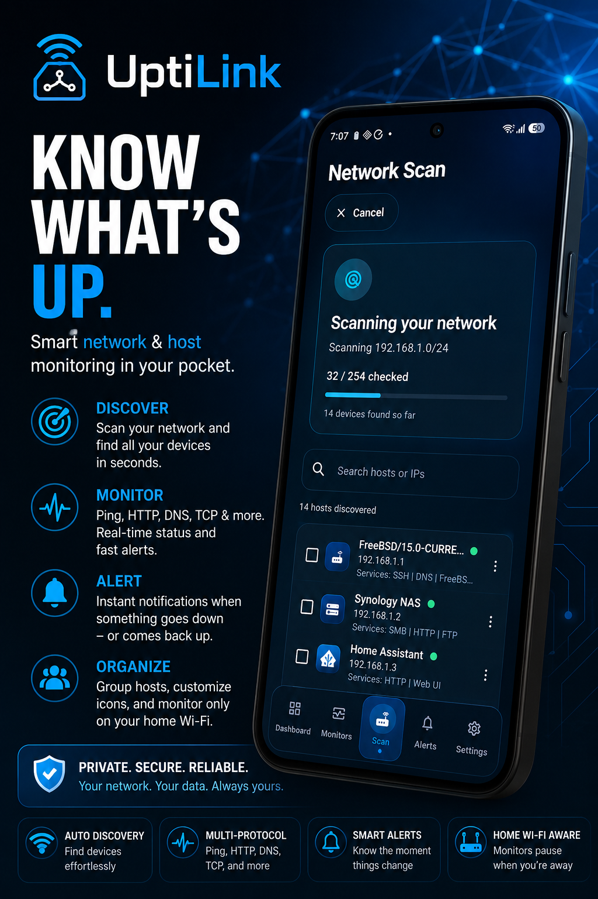
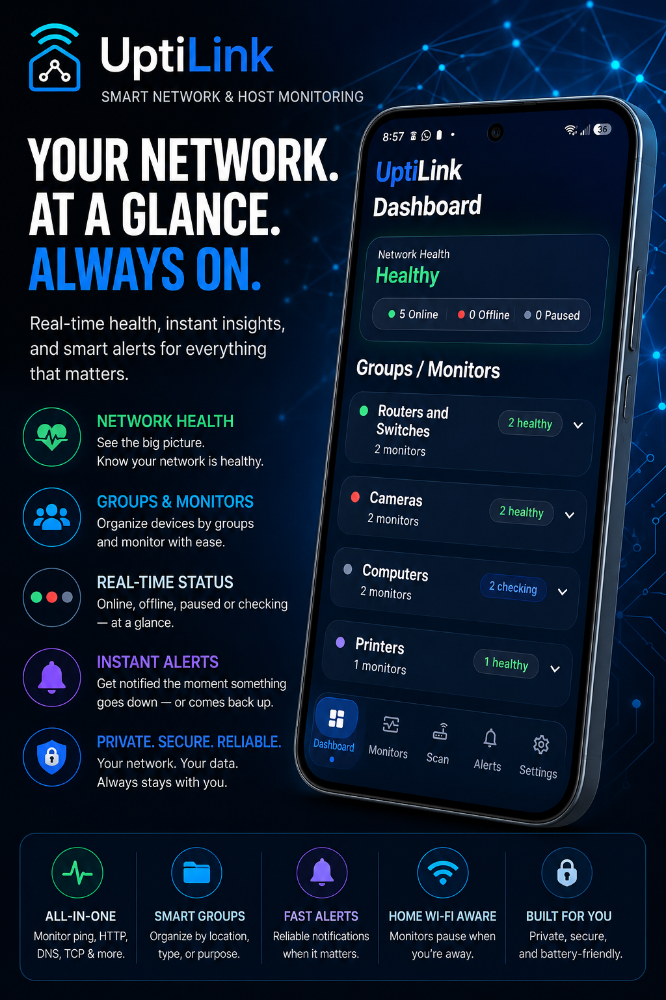
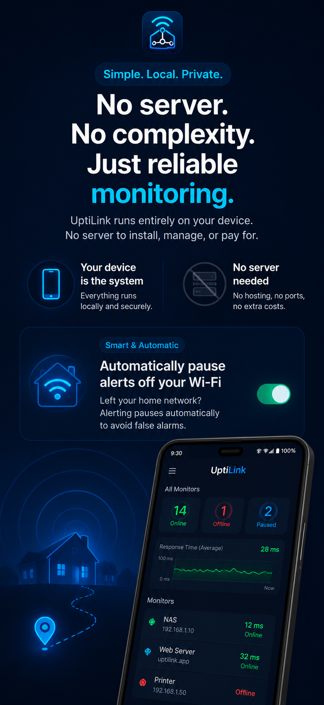
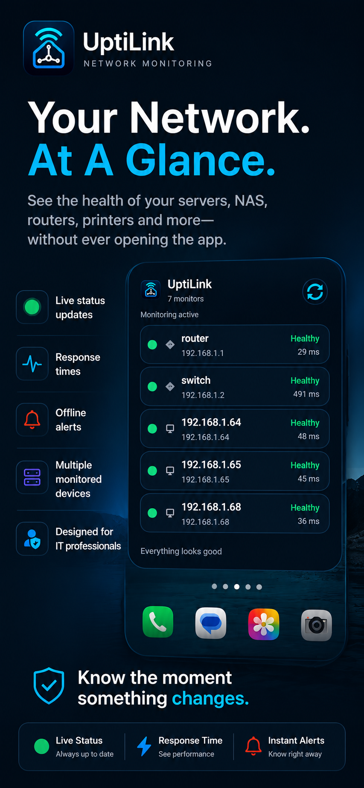

Local network discovery
Scan your current LAN to find reachable devices, then select the equipment you want to keep visible from your UptiLink dashboard.

UptiLink turns your Android device into a clean, capable network uptime monitor. Scan your LAN, add the devices that matter and receive clear outage and recovery alerts.

Traditional monitoring platforms can mean deploying containers, configuring dashboards and maintaining another service. UptiLink provides straightforward device reachability monitoring directly from the Android device you already use.
Built for practical local network monitoring without unnecessary complexity.
Scan your current LAN to find reachable devices, then select the equipment you want to keep visible from your UptiLink dashboard.

UptiLink performs lightweight reachability checks to determine whether monitored devices are responding on your network.
Receive clear notifications when a monitored device becomes unreachable and when it returns online.
Associate monitoring with the appropriate Wi-Fi network to prevent misleading alerts after leaving the monitored location.
Organize servers, networking hardware, smart-home equipment and other devices into clean, manageable groups.
Temporarily pause alerts for equipment that is intentionally offline for maintenance, upgrades or planned work.
View network status at a glance from your Android home screen without opening the full application.

Check the current status of important equipment from a dashboard designed for mobile use. UptiLink provides a focused view of device reachability without the overhead of a traditional monitoring stack.
UptiLink works as a flexible LAN monitoring app for many common network-connected devices.
Track whether Synology, QNAP, TrueNAS and other network storage systems remain reachable.
Keep an eye on hypervisors, mini PCs, containers hosts, lab servers and other homelab equipment.
Detect when a Raspberry Pi running DNS, automation, media or utility services stops responding.
Track routers, switches, wireless access points and other core networking equipment.
Monitor Windows, Linux and other local servers directly from Android while connected to the network.
Watch printers, smart-home hubs, cameras and other devices that respond to network reachability checks.
UptiLink runs the monitoring experience directly on Android. There is no dedicated monitoring server to deploy, no software agent to install on every device and no additional web dashboard to manage.
Monitored devices must be reachable from the Android device's current local network. Android power management and network conditions can affect the timing of background checks.
A polished Android interface for scanning, organizing and monitoring your network.

Watch a complete overview of how UptiLink discovers devices, creates permanent monitors and presents network status from Android.
Open video on YouTubeConnect to the local Wi-Fi network and let UptiLink look for reachable devices.
Choose the NAS, server, router, Raspberry Pi or other equipment you want to monitor.
View current reachability and receive alerts when device status changes.
UptiLink is intentionally focused on practical local network availability monitoring.
UptiLink is an Android network monitor that scans your local network and performs ping-based reachability checks against devices you choose to monitor.
No. UptiLink provides monitoring directly from Android without requiring a dedicated server, appliance, container or separate dashboard.
Yes, provided the NAS, Raspberry Pi or other device is reachable from your Android device and responds to ping requests.
Wi-Fi-aware monitoring can associate checks with the intended network, helping prevent false outage alerts when your phone is no longer connected to that location.
UptiLink is focused on straightforward ping-based device reachability. It is not a full SNMP, traffic, metrics or log monitoring platform.
The device may be powered off, disconnected, on another network or configured to ignore ping requests. Guest Wi-Fi isolation and Android background restrictions can also affect monitoring.
Scan your LAN, monitor important equipment and get notified when device availability changes.
Download UptiLink